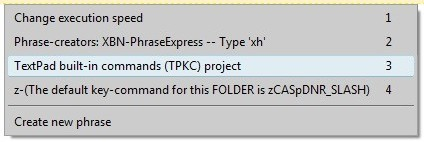
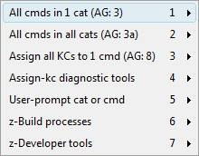
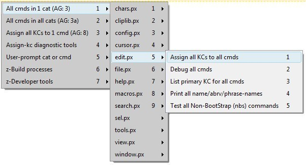
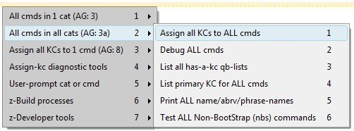
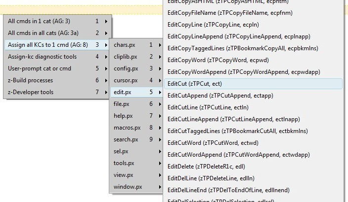
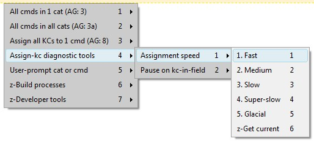
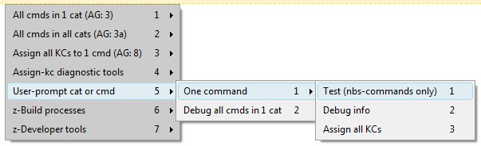
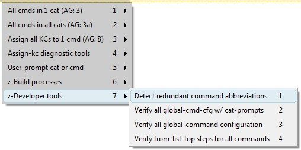

[BACK]
The TPKC user-menu is part of the XBNPE user-menu which, by default, is triggered with the x-key-press zCASpDNR_SLASH.

Selecting the TPKC item (by, for example, clicking it with your mouse) displays the main TPKC menu:

(Click on an item in the menu for further information).
[top] TPKC user-menu: All commands in 1 categoryClick on any command (in the far right, un-dimmed section) for details on each available command.

[BACK] TPKC user-menu: All-cmds-in-1-cat: List primary KC for all cmds in cat[BACK] TPKC user-menu: All-cmds-in-1-cat: Test all nbs-cmds in catTests all Non-BootStrap (nbs) commands in the selected category.
Contents:
[go] Non-BootStrap (nbs) command test format[go] TextPad-bootstraps are not tested by the TPKC-projectAlthough the framework to support these TPKC nbs-tests is complete, very few tests have been setup. Most currently-existing tests are in the file category. If you have created a specific test, please consider contributing it (aliteralmind-github_AT_yahoo_DOT_com).
Each category has one or more files containing its test. Categories with many commands or numerous tests are split into multitple files. For example
{#insert zXPROOT_DIR_tpkc}\for_v_7_0_9\verify_nbs_commands\vnbsc_file_1of2.px.txt
These files contain the
zzNewFlV1Nbs_[category]_[commandname]_ifKc
and
zzzNewFlKcVrfy_[category]_[commandname]_M_cmd1this
phrases.
[BACK] TPKC user-menu: All-cmds-in-1-cat: Test all nbs-cmds in cat: Nbs test formatEvery command must has exactly one or two phrases:
All commands have the "has-a-kc-and-a-test?" phrase. Only nbs-phrases have a test phrase. Note that nbs-test phrases can exist even if that command has no kcs assigned to it.
It is possible to "force" the test of a single unassigned nbs-phrase.
[BACK] Test all nbs-cmds in cat: "Force" test an unassigned nbs-commandIt is possible to "force" a test for a single nbs-command that, according to the TPKC-project, has no key-command assigned to it. Use this to test a specific built-in TextPad command that
TextPad > Configure > Preferences > KeyboardzForceTestKeyCmdEsc
zForceTestKeyCmd
zForceTestKeyCmd is
{#insert zASpOO}
zForceTestKeyCmd must equal
\\\{#insert zASpOO\\\}
The intent of forcing an nbs-test, is to be able to create-and-then-verify tests, without being forced to fully-configure the command itself into the TPKC-project. Without the ability to force a test, it would be required that you
Specifically, to "force" the test of an nbs-command that you have not yet entered into (and perhaps do not want to enter into) your user-specific command-configuration,
[BACK] Test all nbs-cmds in cat: Nbs test format: The "has-a-kc-and-a-test?" phraseThe "has-a-kc-and-has-a-test?" phrase is named
zzzNewFlKcVrfy_[category]_[commandname]_M_cmd1this
This either presents the there-is-no-test dialog, or actually executes the test. The contents of this phrase is always exactly:
{#insert zvCMD_ABRV_1C_sf[commandname]}
{#insert {#COND -if {#insert zzzHasAKCOrFrcTst_yes_M_cmd1} = yes
-then zzzNewFlKcVrfy_[category]_[commandname]_M_cmd1this
-else z1slp}}
Example:
zzNewFlV1Nbs_file_FileExit_ifKc
{#insert zvCMD_ABRV_1C_sfFileExit}
{#insert {#COND -if {#insert zzzHasAKCOrFrcTst_yes_M_cmd1} = yes
-then zzzNewFlKcVrfy_file_FileExit_M_cmd1this
-else z1slp}}
[BACK] Test all nbs-cmds in cat: Nbs test format: The test phraseIf an nbs-command has a test (regardless if it is actually assigned a key-command) then that test must setup, execute, and cleanup all necessary resources.
The test phrase must be named
zzzNewFlKcVrfy_[category]_[commandname]_M_cmd1this
and must be in the format
(*Actually hit the key-command (assigned in the if-has-a-test phrase)*)
{#insert zzHitActlOrFrcVrfyKC_M_cmd1}
(*Set up and display the test-message*)
{#SETPHRASE -description zvTEST_MSG -content
Attempting to .... Please ... before pressing [OK].)
-autotext zvTEST_MSG -folder ctvv_folder}
{#insert zzzShowVerifyTestDlg_M_cmd1Msg}
(*Clean up: Prepare for potential next-test*)
{#insert zFcsTPFileNew}
It is guaranteed before calling this test phrase, that a new file is opened. Therefore, the final step in all tests must be to open a new file.
For example:
zzzNewFlKcVrfy_file_FileExit_M_cmd1this
(*Actually hit the key-command (assigned in the if-has-a-test phrase)*)
{#insert zzHitActlOrFrcVrfyKC_M_cmd1}
(*Set up and display the test-message*)
{#SETPHRASE -description zvTEST_MSG -content
Attempting to close TextPad. If files are unsaved, it's
currently prompting you to save them. If all were saved
(or none were open), it already closed. (Re~open TextPad,
or press [Save none], or [No] in the dialog, before pressing
[OK].)
-autotext zvTEST_MSG -folder ctvv_folder}
{#insert zzzShowVerifyTestDlg_M_cmd1Msg}
(*Clean up: Prepare for potential next-test*)
{#insert zFcsTPFileNew}
[BACK] TPKC user-menu: All-cmds-in-1-cat: Test all nbs-cmds in cat: Not tp-bootstrapsTextPad-bootstrap commands are tested externally from the TPKC-project (tp-bootstraps are not tested by the TPKC-project). Therefore TextPad-bootstrap commands must have their TPKC-tests set up like this:
zzNewFlV1Nbs_[category]_[commandname]_ifKc
{#insert zvCMD_ABRV_1C_sf[commandname]}
{#insert zzzNoVerificationForBtstrpsDlg_M_cmd1}
For example:
zzNewFlV1Nbs_file_FileClose_ifKc
{#insert zvCMD_ABRV_1C_sfFileClose}
{#insert zzzNoVerificationForBtstrpsDlg_M_cmd1}
TP-bootstraps have no test phrase.
[BACK] TPKC user-menu: All-cmds-in-1-cat: Print all name/abrv/phrase-namesPrints the command-name, abbreviation, and phrase-name for all commands in the current category. For example:
... edit > EditAlignRight / zTPAlignRight (ealr) edit > EditBackspace / zTPDeleteL1c (ebksp) edit > EditCapitalize / zTPTitleCase (ecptl) edit > EditClearAll / zTPClearAll (eclall) edit > EditCopy / zTPCopy (ecp) edit > EditCopyAllFileNames / zTPCopyAllFileNames (ecpallfnms) edit > EditCopyAppend / zTPCopyAppend (ecpapp) edit > EditCopyAsHTML / zTPCopyAsHTML (ecphtm) edit > EditCopyFileName / zTPCopyFileName (ecpfnm) edit > EditCopyLine / zTPCopyLine (ecpln) edit > EditCopyLineAppend / zTPCopyLineAppend (ecplnapp) edit > EditCopyTaggedLines / zTPBookmarkCopyAll (ecpbkmlns) ...
[BACK] TPKC user-menu: All-cmds-in-1-cat: Debug all cmds in category[BACK] TPKC user-menu: All-cmds-in-1-cat: Assign all kc-s to all cmds in catAssigns all key-commands to every command in the currently selected category. This uses the category's has-a-kc qbl to automatically skip over commands that have no key-commands assigned to them.
[top] TPKC user-menu: All cmds in all cats
[BACK] TPKC user-menu: All-cmds-all-cats: Test ALL Non-BootStrap (nbs) commands[BACK] TPKC user-menu: All-cmds-all-cats: Print ALL name/abrv/phrase-namesPrints the command-name, abbreviation, and phrase-name for all commands in all categories.
[BACK] TPKC user-menu: All-cmds-all-cats: List primary KC for ALL cmds[BACK] TPKC user-menu: All-cmds-all-cats: List all has-a-kc qb-lists[BACK] TPKC user-menu: All-cmds-all-cats: Debug ALL cmdsPrints all information, in a user-friendly format, about every command in every category.
[BACK] TPKC user-menu: All-cmds-all-cats: List ALL has-a-kc qb-listsEach category's nbs-phrase file has a single special phrase, which is a sQuare-Bracketed List of all commands in the category that have at least one key-command. If a command is either a TextPad-bootstrap, or has at least one Non-BootStrap (nbs) kc, it is included in the qbl. In other words, the has-a-kc qbl is an exact super-set of the nbs-phrases in its category.
This qbl is named
zzTpkcAllCmdsWAKcQbl_[category]
and is written at the bottom of each category's nbs-phrase file, as created by TPKC-build-proc-14:
{#insert zXPROOT_DIR_tpkc}\for_v_7_0_9\user_config\[YOUR_TPKC_USER_DIR_NAME]\output\nbs_command_phrases__bldproc14\[category].px.txt
Every command in the "edit" category that is not in this (hypothetical) qbl, has no key-commands assigned to them.
zzTpkcAllCmdsWAKcQbl_edit
[EditBackspace][EditCapitalize][EditCopy][EditCopyAppend][EditCopyFileName][EditCopyTaggedLines][EditCut][EditCutAppend][EditCutTaggedLines][EditDelete][EditDelLine][EditDelLineEnd][EditDelTaggedLines][EditDelWordLeft][EditDelWordRight][EditDupLine][EditIndentLess][EditIndentMore][EditInvertCase][EditLowerCase][EditNewLineAfter][EditNewLineBefore][EditPaste][EditRedo][EditReformat][EditUndo][EditUpperCase]
This has-a-kc qbl is stored in
{#insert zXPROOT_DIR_tpkc}\for_v_7_0_9\user_config\[YOUR_TPKC_USER_DIR_NAME]\output\nbs_command_phrases__bldproc14\edit.px.txt
[BACK] TPKC user-menu: All-cmds-all-cats: Assign all KCs to ALL cmdsAssigns all key-commands to every command in every category. This uses each category's has-a-kc qbl to automatically skip over commands that have no key-commands assigned to them.
[top] TPKC user-menu: Assign all kc-s to 1 cmd
[top] TPKC user-menu: Assign-kc-s diagnostic toolsThere are two diagnostic tools available when assigning key-commands (one, cat, all):
These tools are primarily intended to help you diagnose key-command conflicts (two commands assigned to the same key-command--something that cannot be detected by the TPKC-project). Other problems you may encounter (that these tools will help with) is as-of-yet unknown illegal key-commands that PhraseExpress simply cannot handle.[BACK] TPKC user-menu: Assign-kc-s diagnostic tools: Assignment speedUse these commands to slow down the assign-a-kc process (one, cat, all), for only when typing and then actually assigning each key-command. The speed of everything else is controlled by the overall XBNPE-key-press speed setting.

[BACK] TPKC user-menu: Assign-kc-s diagnostic tools: KC-pause flagTurning on the "KC-pause flag" causes the assign-a-kc process (one, cat, all) to pause and display some diagnostics. This gives you the opportunity to view the key-command that is about to be assigned, with the additional benefit of showing you the command it is currently assigned to.
For example (note that this happens to be a TextPad-bootstrap, hence "zTPCopyEsc"...if this were an Non-BootStrap [nbs] command, it would instead be something like "zTpkcEditCopyNbsKcEsc1"):

[top] TPKC user-menu: User-prompt cat or cmdSome specific processes that can be run for a single command or category, whose (lowercase) abbreviation you provide at a user-prompt.

(Click on an item for more information.)[BACK] TPKC user-menu: User-prompt: Debug all cmds in 1 cat[BACK] TPKC user-menu: User-prompt: Test (nbs-commands only)[BACK] TPKC user-menu: User-prompt: Debug info[BACK] TPKC user-menu: User-prompt: Assign all KCs[top] TPKC user-menu: User build processes
[top] TPKC user-menu: Developer tools